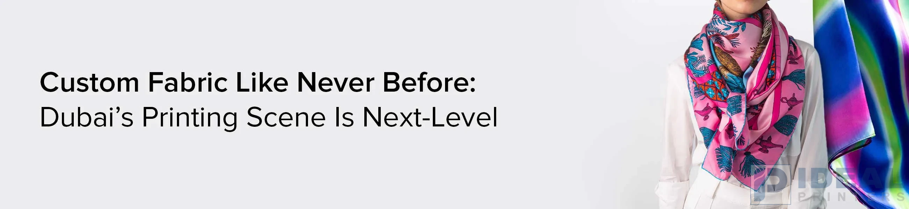

Custom Fabric Like Never Before: Lahore's Printing Scene Is Next-Level

Explore the booming world of fabric printing in Pakistan . From Lahore's vibrant textile scene to custom prints in Lahore, discover how digital print design services are redefining fashion, decor, and branding with premium results.
With the change in fashion and design, there is a higher need for quality custom fabric printing in Pakistan as a leading trend in most sectors. Corporate identity or personal style, individuals and business organizations are seeking fabric printing in Lahore to produce successful, functional, and beautiful products.
The revolution is spearheaded by cutting-edge digital print design firms that under one roof provide accuracy, rich color, and environmentally friendly printing solutions. Fashion, hospitality, events, and retail - custom printing of fabrics elevates art expression to a whole new level.
Textile Printing in Lahore: From Fabric to Function
Lahore textile printing is not a trend-it's a revolution. With digital printing technology now being a reality, it is now possible to convert fabrics into functional products without compromising luxurious colors, intricate details, and softness.
Here are five best-sellers revolutionizing Pakistan's fabric printing industry:
1. Printed Scarves: A Fashion Staple
Add a dash of elegance to your style or brand with Printed scarves. Stylish yet lightweight, printed scarves are ideal for fashion lines, promotion campaigns, and event souvenirs. With endless options when it comes to color and design, printed scarves are where style and identity meet.
2. Floor Cushions: Where Style and Comfort Meet
Welcome any room with beautifully Printed floor cushions. For the stylish lounge, bedroom, or reading nook, our cushions are available in different sizes and shapes - spiced with your designs, logo, or colors.
3. Custom Aprons: Convenient & Promotional
Perfect for chefs, artists, cafes, or event promotions, printed aprons are functional and informative. Aprons decorated with logos, artwork, or slogans to make a lasting gift or uniform that reflects your brand in form and function.
4. Drawstring Pouches: Quick Witted Branding on the Go
Ideal for promotional retail, giveaways, or green marketing, our printed fabric Drawstring bags are printable with any logo or image. Reusable, washable, and fashionable, they create brand visibility without stressing the planet.
5. Smart Fit Face Masks: Style Meets Protection
Mixing comfort and personalization, our Printed face masks are perfect for teams, events, or retail collections. Washable, comfortable, and completely on-brand - these masks turn security into a work of style.
Why Digital Print Design Services?
Whether designing from scratch or enhancing an existing design, skilled digital print design services assure your art looks great on fabric. From file setup to color match, this process assures your product not only looks good, but feels right.
With the proper digital print design service provider, you can have professional advice, creative liberty, and printing to high standards - whether you are buying in small quantities or you must impress retail.
Fabric Printing Lahore & Lahore: A New Hotspot for Innovation
Lahore fabric printing is getting increasingly popular among designers and companies that are embracing customized fabric as an option for promotional events, occasions, and general purposes. Alongside the advanced technology in fabric printing in Lahore, Pakistan has set itself as a benchmark industry in the journey of revolutionizing textiles in a relatively short time.
From luxurious finishes to quick turnaround, we have it all under one roof - save time, save money, and maintain design consistency.
Ready to Print Something Amazing?
Ideal Printers provides start-to-finish fabric printing solutions in Pakistan - hardly an apron or scarf, to cushions and beyond. With state-of-the-art technology, premium fabrics, and a team of experts ready to help, we turn your imagination into a reality, print by print.
Bring your vision to life - one print at a time.
Innovating Fabric Printing in Lahore As demand grows for textile printing in Lahore, Ideal Printers stays ahead with cutting-edge digital print design. Whether you need fabric for exhibitions, uniforms, fashion collections, or promotional items, we craft each piece to your exact needs. With bold colors, rich textures, and a variety of fabric options, our fabric printing services in Lahore continue to redefine what's possible in fashion and branding.
Bring your vision to life - one print at a time.
Innovating Fabric Printing in Lahore As demand grows for textile printing in Lahore, Ideal Printers stays ahead with cutting-edge digital print design. Whether you need fabric for exhibitions, uniforms, fashion collections, or promotional items, we craft each piece to your exact needs. With bold colors, rich textures, and a variety of fabric options, our fabric printing services in Lahore continue to redefine what's possible in fashion and branding.
Let's Create Something Special!
From events to new brand launches to refreshing your visual identity, Ideal Printers is your one-stop Pakistan printing solution.
- WhatsApp: +92 42 3597 9285
- Email: idealprinter41@gmail.com
- Instagram: @idealprinters
- Website: Ideal Printers
- Office Location: G-2, Al-Rehman Centre, Shama Metro Station, 70-Ferozepur Road, Lahore